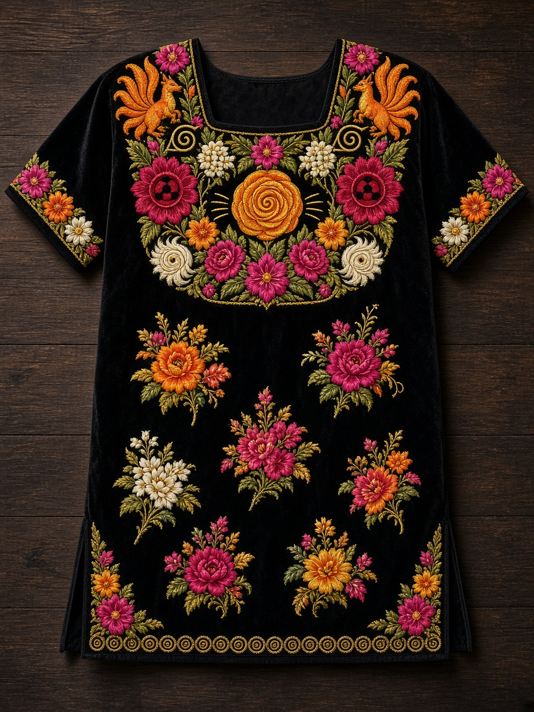
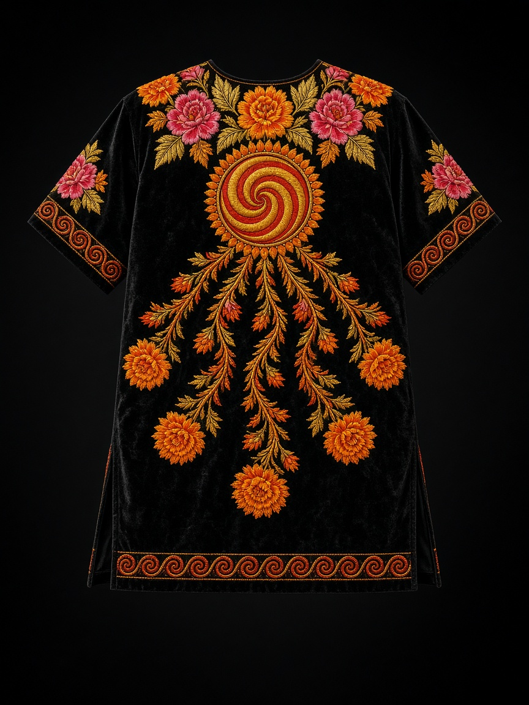

Túnica ceremonial para hombre: el yugo floral del huipil de gala zapoteca, con los signos de Naruto pasados a rosa, hoja, zorro y greca. Terciopelo negro, seda a mano, caída a media muslo.
Láminas principales

01 · Frente. Yugo de gala, medallón Uzumaki, Kurama en los hombros, ramilletes sueltos.

02 · Espalda. Espiral de clan y nueve colas de cempasúchil.